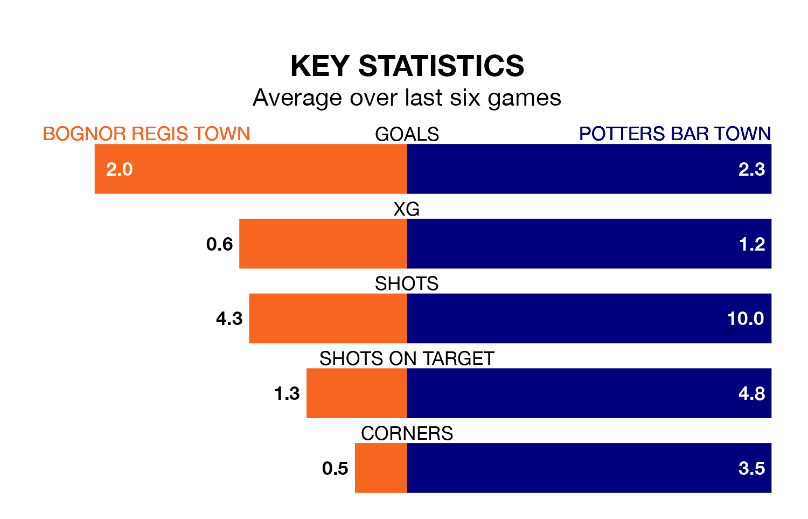

Bognor Regis Town host Potters Bar Town on Saturday at Nyewood Lane in the Isthmian Premier Division.
In their last league match, on February 17, Bognor Regis lost to Kingstonian 3-2 away.
Potters Bar drew, 1-1 at home against Carshalton Athletic on February 6.
In the last 10 years, Bognor Regis and Potters Bar have played each other on nine occasions. Bognor Regis won three of them, Potters Bar two, and they drew four times.
On average, Bognor Regis scored 1.4 goals and Potters Bar 1.4 in those matches.
Their last meeting was on September 30, when they played out a 1-1 draw.
With 48 goals in 29 games so far this season, Bognor Regis are scoring more than average in the league with 1.7 goals per game. And they are conceding fewer than average, letting in 39 goals at a rate of 1.3 per game.
Potters Bar, meanwhile, are below average scorers, with 1.5 goals per game, compared to a league average of 1.6. They have conceded 1.7 goals per game.
Potters Bar Town are 16th in the table after 26 games, of which they have won nine and drawn seven, earning 34 points.
Bognor Regis Town are eight places ahead of the away team in eighth, with 12 wins and 10 draws putting them on 46 points.
The hosts are in good form in the Isthmian Premier Division, with four wins and a draw from their last six games.
With three wins and a draw over that period, Potters Bar's form is worse – they have taken 10 points from 18, compared to Bognor Regis's 13.
Updated: 10:08 (UTC), 23/02/24